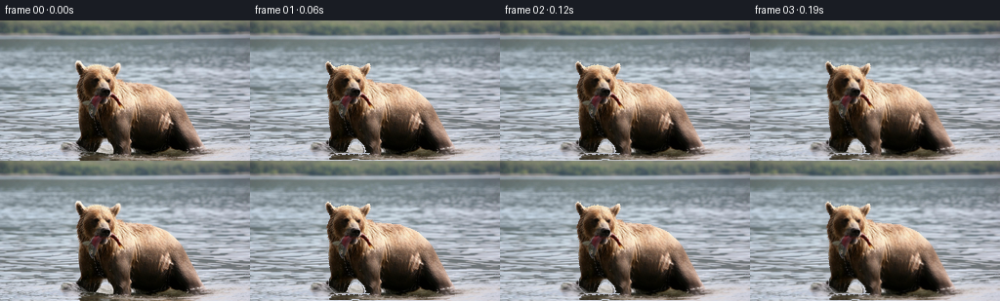
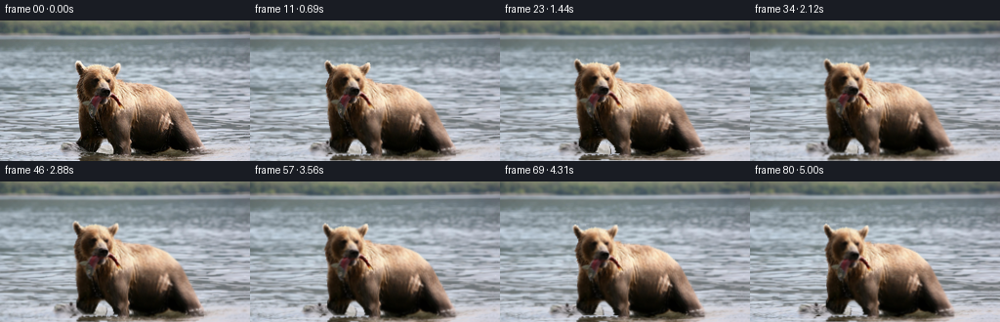

CODING AGENTS AS PIXEL WORLD MODELS
traex/GPT-6.1-Sol · 0872_s2
点击播放 · 原生 RGB 像素
逐轮保存的候选
回放视频、检查图与代码变化。
每份候选均可单独播放。实际图片检查记录在下方工具轨迹中。
候选 01播放与检查图
点击播放 · 原生 RGB 像素


展开代码变化
--- 上一保存版本
+++ 本次保存版本
@@ -0,0 +1,154 @@
+"""Animate a photograph by separating river motion and articulated fur motion.
+No model or external image assets are used.
+"""
+from pathlib import Path
+import numpy as np
+from PIL import Image
+import cv2
+from scipy.ndimage import binary_closing, binary_fill_holes, label, gaussian_filter, distance_transform_edt
+import artifact_io
+
+ROOT = Path(__file__).resolve().parent
+H,W = 144,256
+Y,X = np.mgrid[:H,:W].astype(np.float32)
+
+def sample(im, x, y):
+ return cv2.remap(im.astype(np.float32), x.astype(np.float32), y.astype(np.float32), cv2.INTER_LINEAR, borderMode=cv2.BORDER_REFLECT_101)
+
+def smooth(a):
+ a=np.clip(a,0,1)
+ return a*a*(3-2*a)
+
+def make_layers(image):
+ r,g,b = image.transpose(2,0,1).astype(float)
+ seed = (r-b>8)&(r-g>3)&(Y>38)&(X>73)&(X<210)
+ ll,_=label(seed)
+ c=np.bincount(ll.ravel());c[0]=0
+ m=binary_fill_holes(binary_closing(ll==c.argmax(),iterations=1))
+ # The almost black wet fur is part of the bear, not a hole.
+ for row in range(58,136):
+ idx=np.where(m[row])[0]
+ if len(idx):
+ left=idx[0] if row<113 else int(np.interp(row,[113,119,127,132,136],[82,82,81,84,88]))
+ m[row,left:idx[-1]+1]=True
+ # Preserve the visible river between the front paws.
+ gap=np.zeros((H,W),np.uint8)
+ poly=np.array([[106,122],[110,122],[113,125],[115,127],[117,130],
+ [118,134],[117,136],[102,136],[100,133],[100,130],
+ [102,127],[103,124]],np.int32)
+ cv2.fillPoly(gap,[poly],1)
+ m[gap>0]=False
+ # Bottom of the wet coat blends into its rippled reflection.
+ edge=distance_transform_edt(m)-distance_transform_edt(~m)
+ alpha=smooth((edge+0.9)/2.0).astype(np.float32)
+ alpha*=1-0.72*smooth((Y-133)/10)
+ # A river-only plate, extrapolated from water on the same scanline.
+ bg=image.astype(np.float32).copy()
+ ext=cv2.dilate(m.astype(np.uint8),np.ones((3,3),np.uint8)).astype(bool)
+ for row in range(H):
+ loc=np.where(ext[row])[0]
+ if not len(loc):continue
+ L,R=loc.min(),loc.max()
+ xx=np.arange(L,R+1)
+ sxL=np.clip(L-2-(xx-L)%max(8,min(50,L-2)),0,W-1)
+ sxR=np.clip(R+2+(R-xx)%max(8,min(44,W-R-3)),0,W-1)
+ mix=smooth((xx-L)/(max(1,R-L)))[:,None]
+ copied=image[row,sxL].astype(float)*(1-mix)+image[row,sxR].astype(float)*mix
+ # keep the original pixels in the actual river gap
+ use=ext[row,xx]
+ bg[row,xx[use]]=copied[use]
+ # Exact reconstruction of fractional fur edges, without dark double contours.
+ premult=image.astype(np.float32)-bg*(1-alpha[...,None])
+ premult[alpha<1e-5]=0
+ return bg,alpha,premult,m
+
+def generate():
+ im=np.array(Image.open(ROOT/'first_frame.png').convert('RGB'))
+ bg,alpha,fg,m=make_layers(im)
+ frames=np.empty((81,H,W,3),np.uint8)
+ frames[0]=im
+ rng=np.random.default_rng(91)
+ # Tiny water droplets near the submerged paws.
+ droplets=[]
+ for event in [0.75,1.85,3.0,4.25]:
+ for k in range(9):
+ side=k%2
+ droplets.append((event+rng.uniform(-.13,.13),
+ (83 if side==0 else 200)+rng.uniform(-3,3),
+ 133+rng.uniform(-1.5,1.5),
+ rng.uniform(-5,5),rng.uniform(9,18),
+ rng.uniform(.2,.55)))
+ for i in range(1,81):
+ t=i/16
+ onset=1-np.exp(-t*3)
+ # The river moves horizontally, with small independent shearing waves.
+ depth=smooth((Y-8)/135)
+ wx=1.25*t*(.25+1.7*depth)
+ wx+=.7*depth*(np.sin(Y*.16-t*2.8)-np.sin(Y*.16))
+ wx+=.45*depth*(np.sin(X*.045+Y*.33-t*1.8)-np.sin(X*.045+Y*.33))
+ wy=.48*depth*(np.sin(X*.075+Y*.18-t*2.5)-np.sin(X*.075+Y*.18))
+ water=sample(bg,X+wx,Y+wy)
+ # Expanding, low-amplitude wakes move through the reflected coat edge.
+ wake=np.zeros((H,W),np.float32)
+ for cx,cy in [(83,134),(200,135)]:
+ rr=np.sqrt(((X-cx)*.58)**2+((Y-cy)*2.0)**2)
+ wake+=.32*onset*np.sin(rr*.78-t*5.1)*np.exp(-rr/20)*smooth((Y-120)/13)
+ water=sample(water,X,Y+wake)
+ shimmer=1.0+0.009*onset*depth*np.sin(Y*.42+X*.035-t*3.8)
+ water*=shimmer[...,None]
+
+ # Slow weight transfer and a soft lift of the head while holding the fish.
+ step=onset*(.95*np.sin(t*2.0)+.32*np.sin(t*4.1))
+ drift=-2.2*smooth(t/5.0)
+ dyBody=onset*.55*np.sin(t*2.0+.2)
+ bodyDX=drift+step*(.40+.60*smooth((Y-80)/55))
+ bodyDY=dyBody+.40*onset*np.sin(t*1.7)*np.exp(-((X-151)/38)**2-((Y-88)/30)**2)
+ breath=.007*onset*np.sin(t*2.4)
+ bodyDX+=breath*(X-141)*np.exp(-((Y-92)/39)**2)
+ headWeight=np.exp(-((X-100)/28)**6)*(1-smooth((Y-87)/24))
+ # Head turn is a small in-plane turn plus asymmetric cheek compression.
+ nod=onset*(2.25*np.sin(t*.98)+.65*np.sin(t*2.15))
+ turn=onset*(.038*np.sin(t*1.13)-.018*np.sin(t*2.0))
+ yaw=onset*.025*np.sin(t*1.05)
+ dxHead=-1.8*onset*np.sin(t*1.02)-turn*(Y-86)+yaw*(X-105)
+ dyHead=-nod+turn*(X-105)
+ dx=bodyDX+headWeight*dxHead
+ dy=bodyDY+headWeight*dyHead
+ # Fish and lower jaw move with the head; the dangling end sways subtly.
+ fishW=np.exp(-((X-97)/5.0)**2-((Y-94)/11.5)**2)
+ tail=smooth((Y-83)/18)
+ dx+=fishW*tail*.8*onset*np.sin(t*5.4)
+ dy+=fishW*.35*onset*np.sin(t*4.0)
+ jaw=np.exp(-((X-103)/12)**4-((Y-84)/6.0)**4)
+ dy+=jaw*.38*onset*(.5-.5*np.cos(t*5.2))
+ # Inverse displacement, with a correction for spatially varying motion.
+ sx=X-dx;sy=Y-dy
+ sx=X-sample(dx,sx,sy);sy=Y-sample(dy,sx,sy)
+ a=np.clip(sample(alpha,sx,sy),0,1)
+ coat=sample(fg,sx,sy)
+ # Fur illumination stays essentially fixed under the soft daylight.
+ light=1+.009*onset*np.sin(t*1.8)*np.exp(-((Y-72)/45)**2)
+ frame=water*(1-a[...,None])+coat*light[...,None]
+ # Natural small, sparse glints from disturbed surface water.
+ for birth,cx,cy,vx,vy,strength in droplets:
+ age=t-birth
+ if 0<age<.72:
+ px=cx+vx*age;py=cy-vy*age+25*age*age
+ opacity=.48*strength*np.sin(np.pi*age/.72)
+ spot=np.exp(-((X-px)/.42)**2-((Y-py)/.65)**2)*opacity
+ frame=frame*(1-spot[...,None])+np.array([219,226,233])*spot[...,None]
+ # Small camera push, locked to the bear rather than jittering.
+ zoom=1+.020*smooth(t/5)
+ frame=sample(frame,128+(X-128)/zoom,83+(Y-83)/zoom)
+ frames[i]=np.clip(np.rint(frame),0,255).astype(np.uint8)
+ artifact_io.save(frames,ROOT)
+ np.save(ROOT/'generated_rgb.npy',frames)
+ # Numeric inspection, including the strict first-frame invariant.
+ assert np.array_equal(frames[0],im)
+ d=np.abs(np.diff(frames.astype(np.int16),axis=0))
+ print('RGB shape:',frames.shape,'dtype:',frames.dtype)
+ print('Temporal mean abs changes:',np.round(d.mean((1,2,3))[[0,1,15,31,47,63,79]],3))
+ print('First frame identical:',np.array_equal(frames[0],im))
+
+if __name__=='__main__':
+ generate()
候选 02播放与检查图
点击播放 · 原生 RGB 像素

展开代码变化
--- 上一保存版本
+++ 本次保存版本
@@ -143,6 +143,11 @@
frames[i]=np.clip(np.rint(frame),0,255).astype(np.uint8)
artifact_io.save(frames,ROOT)
np.save(ROOT/'generated_rgb.npy',frames)
+ # Convenient playback copy; pixels.npz and PNG frames are the RGB master.
+ import imageio.v2 as imageio
+ imageio.mimwrite(ROOT/'video.mp4', frames, fps=16, codec='libx264rgb',
+ macro_block_size=1, ffmpeg_params=['-crf','0','-preset','fast'],
+ pixelformat='rgb24')
# Numeric inspection, including the strict first-frame invariant.
assert np.array_equal(frames[0],im)
d=np.abs(np.diff(frames.astype(np.int16),axis=0))
可观测工具轨迹
实际执行的命令与返回图片。
命令 1exit 0
/bin/bash -lc "ls -la && cat prompt.txt && printf '\\n---RULES---\\n' && cat GENERATION_RULES.md"
命令 2exit 0
/bin/bash -lc "cat task_spec.json && cat artifact_io.py && python - <<'PY'
from PIL import Image
import numpy as np
im=np.asarray(Image.open('first_frame.png').convert('RGB'))
print(im.shape)
# coarse RGB samples as labeled colors
for y in range(0,144,6):
out=''
for x in range(0,256,4):
r,g,b=im[y:y+6,x:x+4].mean((0,1))
if max(r,g,b)<45: c='K'
elif max(r,g,b)<75: c='d'
elif r>1.2*b and r>1.13*g: c='B' if r<125 else 'T'
elif b>r*1.12: c='~'
elif max(r,g,b)>200: c='W'
elif max(r,g,b)>155: c='o'
elif max(r,g,b)>110: c=':'
else:c='.'
out+=c
print(f'{y:3} {out}')
print('RGB GRID')
for y in range(0,144,12):
print(y, ['%d,%d,%d'%tuple(im[y:y+12,x:x+16].mean((0,1)).astype(int)) for x in range(0,256,16)])
PY"命令 3exit 0
/bin/bash -lc "python - <<'PY'
import numpy as np
from PIL import Image
A=np.array(Image.open('first_frame.png')).astype(float)
# warm mask map 2x2 pixel ascii with brightness classes
print('WARM OBJECT MAP')
for y in range(30,144,2):
s=''
for x in range(60,216,2):
r,g,b=A[y:y+2,x:x+2].mean((0,1))
if r>b+8 and r>g+4: c=' .:-=+*#%@'[min(9,int((r*.5+g*.4+b*.1)/26))]
else:c=' '
s+=c
print(f'{y:3} {s}')
print('HEAD GRAY')
for y in range(34,96):
s=''
for x in range(72,130):
v=A[y,x].mean()
s+=' .,:;irsXA253hMHGS#9B&@'[min(21,int(v/256*22))]
print(f'{y:3} {s}')
print('selected rows pixel rgb')
for y in [40,45,50,55,60,65,70,75,80,85,90,95,100]:
print(y,[(x,tuple(A[y,x].astype(int))) for x in range(76,132,4)])
PY"命令 4exit 0
/bin/bash -lc "python - <<'PY'
from PIL import Image
import numpy as np
A=np.asarray(Image.open('first_frame.png')).astype(float)
print('Region coordinates: X=76..125, gray-bright digits, dark warm .=low :=mid T=high, red R')
print(' '+''.join(str(x//10%10) for x in range(76,126)))
print(' '+''.join(str(x%10) for x in range(76,126)))
for y in range(70,144):
s=''
for x in range(76,126):
r,g,b=A[y,x]
if b-r>3:c='~'
elif abs(r-b)<12 and abs(r-g)<12:c=str(min(9,int((r+g+b)/3/26)))
elif g<r*.65 and b>g*.85 and r>60:c='R'
elif r-b>10:c='.' if r<65 else ':' if r<130 else 'T' if r<195 else '#'
else:c='x'
s+=c
print('%3d'%y,s)
PY"命令 5exit 0
/bin/bash -lc "python - <<'PY'
import importlib.util
for x in ['scipy','cv2','imageio','imageio_ffmpeg']:print(x, bool(importlib.util.find_spec(x)))
import numpy as np
from PIL import Image
A=np.array(Image.open('first_frame.png')).astype(float)
from scipy.ndimage import label, binary_closing,binary_fill_holes
Y,X=np.indices(A.shape[:2]);r,g,b=A.transpose(2,0,1)
m=((r-b>8)&(r-g>3)&(Y>38)&(X>73)&(X<209))
l,n=label(m);counts=np.bincount(l.ravel());counts[0]=0;m=l==counts.argmax()
m=binary_fill_holes(binary_closing(m,iterations=1))
print('bounds by row, initial warm seg')
for y in range(36,144,2):
x=np.where(m[y])[0]
if len(x):print(y,x.min(),x.max(),len(x))
print('mask rows (2 pix)')
for y in range(38,144,2):
print(f'{y:3} '+''.join('#' if m[y:y+2,x:x+2].mean()>.5 else '+' if m[y:y+2,x:x+2].any() else ' ' for x in range(72,216,2)))
PY"命令 6exit 0
/bin/bash -lc "python - <<'PY'
import numpy as np
from PIL import Image
A=np.asarray(Image.open('first_frame.png')).astype(float)
print('bottom scene gray (x76..214; each character 2px)')
print(' '+''.join(str(x//10%10) for x in range(76,216,2)))
for y in range(112,144):
s=''
for x in range(76,216,2):
r,g,b=A[y,x:x+2].mean(0)
if b>r+5:c='~'
else:c=' .,:;irsXA253hMHGS#9B&@'[min(21,int((r+g+b)/3/256*22))]
s+=c
print(f'{y:3} {s}')
PY"命令 7exit 0
/bin/bash -lc "python - <<'PY'
import numpy as np
from PIL import Image
A=np.array(Image.open('first_frame.png'))
for y in [117,120,123,126,129,132,135,137,140]:
print('\\n',y)
for x in range(78,214,4):print(x,tuple(A[y,x]),end='; ')
print()
PY"命令 8exit 0
/bin/bash -lc "cat > generate.py <<'PY'
\"\"\"Animate a photograph by separating river motion and articulated fur motion.
No model or external image assets are used.
\"\"\"
from pathlib import Path
import numpy as np
from PIL import Image
import cv2
from scipy.ndimage import binary_closing, binary_fill_holes, label, gaussian_filter, distance_transform_edt
import artifact_io
ROOT = Path(__file__).resolve().parent
H,W = 144,256
Y,X = np.mgrid[:H,:W].astype(np.float32)
def sample(im, x, y):
return cv2.remap(im.astype(np.float32), x.astype(np.float32), y.astype(np.float32), cv2.INTER_LINEAR, borderMode=cv2.BORDER_REFLECT_101)
def smooth(a):
a=np.clip(a,0,1)
return a*a*(3-2*a)
def make_layers(image):
r,g,b = image.transpose(2,0,1).astype(float)
seed = (r-b>8)&(r-g>3)&(Y>38)&(X>73)&(X<210)
ll,_=label(seed)
c=np.bincount(ll.ravel());c[0]=0
m=binary_fill_holes(binary_closing(ll==c.argmax(),iterations=1))
# The almost black wet fur is part of the bear, not a hole.
for row in range(58,136):
idx=np.where(m[row])[0]
if len(idx):
left=idx[0] if row<113 else int(np.interp(row,[113,119,127,132,136],[82,82,81,84,88]))
m[row,left:idx[-1]+1]=True
# Preserve the visible river between the front paws.
gap=np.zeros((H,W),np.uint8)
poly=np.array([[106,122],[110,122],[113,125],[115,127],[117,130],
[118,134],[117,136],[102,136],[100,133],[100,130],
[102,127],[103,124]],np.int32)
cv2.fillPoly(gap,[poly],1)
m[gap>0]=False
# Bottom of the wet coat blends into its rippled reflection.
edge=distance_transform_edt(m)-distance_transform_edt(~m)
alpha=smooth((edge+0.9)/2.0).astype(np.float32)
alpha*=1-0.72*smooth((Y-133)/10)
# A river-only plate, extrapolated from water on the same scanline.
bg=image.astype(np.float32).copy()
ext=cv2.dilate(m.astype(np.uint8),np.ones((3,3),np.uint8)).astype(bool)
for row in range(H):
loc=np.where(ext[row])[0]
if not len(loc):continue
L,R=loc.min(),loc.max()
xx=np.arange(L,R+1)
sxL=np.clip(L-2-(xx-L)%max(8,min(50,L-2)),0,W-1)
sxR=np.clip(R+2+(R-xx)%max(8,min(44,W-R-3)),0,W-1)
mix=smooth((xx-L)/(max(1,R-L)))[:,None]
copied=image[row,sxL].astype(float)*(1-mix)+image[row,sxR].astype(float)*mix
# keep the original pixels in the actual river gap
use=ext[row,xx]
bg[row,xx[use]]=copied[use]
# Exact reconstruction of fractional fur edges, without dark double contours.
premult=image.astype(np.float32)-bg*(1-alpha[...,None])
premult[alpha<1e-5]=0
return bg,alpha,premult,m
def generate():
im=np.array(Image.open(ROOT/'first_frame.png').convert('RGB'))
bg,alpha,fg,m=make_layers(im)
frames=np.empty((81,H,W,3),np.uint8)
frames[0]=im
rng=np.random.default_rng(91)
# Tiny water droplets near the submerged paws.
droplets=[]
for event in [0.75,1.85,3.0,4.25]:
for k in range(9):
side=k%2
droplets.append((event+rng.uniform(-.13,.13),
(83 if side==0 else 200)+rng.uniform(-3,3),
133+rng.uniform(-1.5,1.5),
rng.uniform(-5,5),rng.uniform(9,18),
rng.uniform(.2,.55)))
for i in range(1,81):
t=i/16
onset=1-np.exp(-t*3)
# The river moves horizontally, with small independent shearing waves.
depth=smooth((Y-8)/135)
wx=1.25*t*(.25+1.7*depth)
wx+=.7*depth*(np.sin(Y*.16-t*2.8)-np.sin(Y*.16))
wx+=.45*depth*(np.sin(X*.045+Y*.33-t*1.8)-np.sin(X*.045+Y*.33))
wy=.48*depth*(np.sin(X*.075+Y*.18-t*2.5)-np.sin(X*.075+Y*.18))
water=sample(bg,X+wx,Y+wy)
# Expanding, low-amplitude wakes move through the reflected coat edge.
wake=np.zeros((H,W),np.float32)
for cx,cy in [(83,134),(200,135)]:
rr=np.sqrt(((X-cx)*.58)**2+((Y-cy)*2.0)**2)
wake+=.32*onset*np.sin(rr*.78-t*5.1)*np.exp(-rr/20)*smooth((Y-120)/13)
water=sample(water,X,Y+wake)
shimmer=1.0+0.009*onset*depth*np.sin(Y*.42+X*.035-t*3.8)
water*=shimmer[...,None]
# Slow weight transfer and a soft lift of the head while holding the fish.
step=onset*(.95*np.sin(t*2.0)+.32*np.sin(t*4.1))
drift=-2.2*smooth(t/5.0)
dyBody=onset*.55*np.sin(t*2.0+.2)
bodyDX=drift+step*(.40+.60*smooth((Y-80)/55))
bodyDY=dyBody+.40*onset*np.sin(t*1.7)*np.exp(-((X-151)/38)**2-((Y-88)/30)**2)
breath=.007*onset*np.sin(t*2.4)
bodyDX+=breath*(X-141)*np.exp(-((Y-92)/39)**2)
headWeight=np.exp(-((X-100)/28)**6)*(1-smooth((Y-87)/24))
# Head turn is a small in-plane turn plus asymmetric cheek compression.
nod=onset*(2.25*np.sin(t*.98)+.65*np.sin(t*2.15))
turn=onset*(.038*np.sin(t*1.13)-.018*np.sin(t*2.0))
yaw=onset*.025*np.sin(t*1.05)
dxHead=-1.8*onset*np.sin(t*1.02)-turn*(Y-86)+yaw*(X-105)
dyHead=-nod+turn*(X-105)
dx=bodyDX+headWeight*dxHead
dy=bodyDY+headWeight*dyHead
# Fish and lower jaw move with the head; the dangling end sways subtly.
fishW=np.exp(-((X-97)/5.0)**2-((Y-94)/11.5)**2)
tail=smooth((Y-83)/18)
dx+=fishW*tail*.8*onset*np.sin(t*5.4)
dy+=fishW*.35*onset*np.sin(t*4.0)
jaw=np.exp(-((X-103)/12)**4-((Y-84)/6.0)**4)
dy+=jaw*.38*onset*(.5-.5*np.cos(t*5.2))
# Inverse displacement, with a correction for spatially varying motion.
sx=X-dx;sy=Y-dy
sx=X-sample(dx,sx,sy);sy=Y-sample(dy,sx,sy)
a=np.clip(sample(alpha,sx,sy),0,1)
coat=sample(fg,sx,sy)
# Fur illumination stays essentially fixed under the soft daylight.
light=1+.009*onset*np.sin(t*1.8)*np.exp(-((Y-72)/45)**2)
frame=water*(1-a[...,None])+coat*light[...,None]
# Natural small, sparse glints from disturbed surface water.
for birth,cx,cy,vx,vy,strength in droplets:
age=t-birth
if 0<age<.72:
px=cx+vx*age;py=cy-vy*age+25*age*age
opacity=.48*strength*np.sin(np.pi*age/.72)
spot=np.exp(-((X-px)/.42)**2-((Y-py)/.65)**2)*opacity
frame=frame*(1-spot[...,None])+np.array([219,226,233])*spot[...,None]
# Small camera push, locked to the bear rather than jittering.
zoom=1+.020*smooth(t/5)
frame=sample(frame,128+(X-128)/zoom,83+(Y-83)/zoom)
frames[i]=np.clip(np.rint(frame),0,255).astype(np.uint8)
artifact_io.save(frames,ROOT)
np.save(ROOT/'generated_rgb.npy',frames)
# Numeric inspection, including the strict first-frame invariant.
assert np.array_equal(frames[0],im)
d=np.abs(np.diff(frames.astype(np.int16),axis=0))
print('RGB shape:',frames.shape,'dtype:',frames.dtype)
print('Temporal mean abs changes:',np.round(d.mean((1,2,3))[[0,1,15,31,47,63,79]],3))
print('First frame identical:',np.array_equal(frames[0],im))
if __name__=='__main__':
generate()
PY
python generate.py"命令 9exit 0
/bin/bash -lc "python - <<'PY'
import numpy as np
import cv2
from pathlib import Path
f=np.load('generated_rgb.npy')
# Inspect independent motion regions numerically, without displaying images.
for name,(x0,y0,x1,y1) in {'head':(77,40,126,94),'body':(123,66,194,126),'river':(0,46,69,144)}.items():
a=f[:,y0:y1,x0:x1].astype(float)
print(name,'total change',round(abs(a[-1]-a[0]).mean(),2),'range',round(a.mean((1,2,3)).min(),2),round(a.mean((1,2,3)).max(),2))
print('saturated pixels',[(i,round(((f[i]==0)|(f[i]==255)).mean(),5)) for i in [0,20,40,60,80]])
v=cv2.VideoWriter('video.mp4',cv2.VideoWriter_fourcc(*'mp4v'),16,(256,144))
assert v.isOpened()
for frame in f:v.write(cv2.cvtColor(frame,cv2.COLOR_RGB2BGR))
v.release()
print('video.mp4 bytes',Path('video.mp4').stat().st_size)
PY"命令 10exit 0
/bin/bash -lc "python generate.py && python - <<'PY'
import imageio.v2 as iio
import numpy as np
from PIL import Image
f=np.load('generated_rgb.npy')
v=iio.get_reader('video.mp4')
print('mp4',v.get_meta_data()['fps'], v.get_meta_data()['size'])
n=0
for i,a in enumerate(v):
assert np.array_equal(a,f[i]),i
n+=1
print('Lossless RGB playback validated:',n,'frames')
p=np.load('pixels.npz')['pixels']
a=np.array(Image.open('first_frame.png').convert('RGB')).astype(np.uint32)
assert np.array_equal(p[:,:,0],(a[:,:,0]<<16)|(a[:,:,1]<<8)|a[:,:,2])
print('Packed pixels validated:',p.shape)
PY"保存候选 2 份；完成命令 10 次；可验证图片返回 0 张。原始 API 响应与完整日志保留在本地。